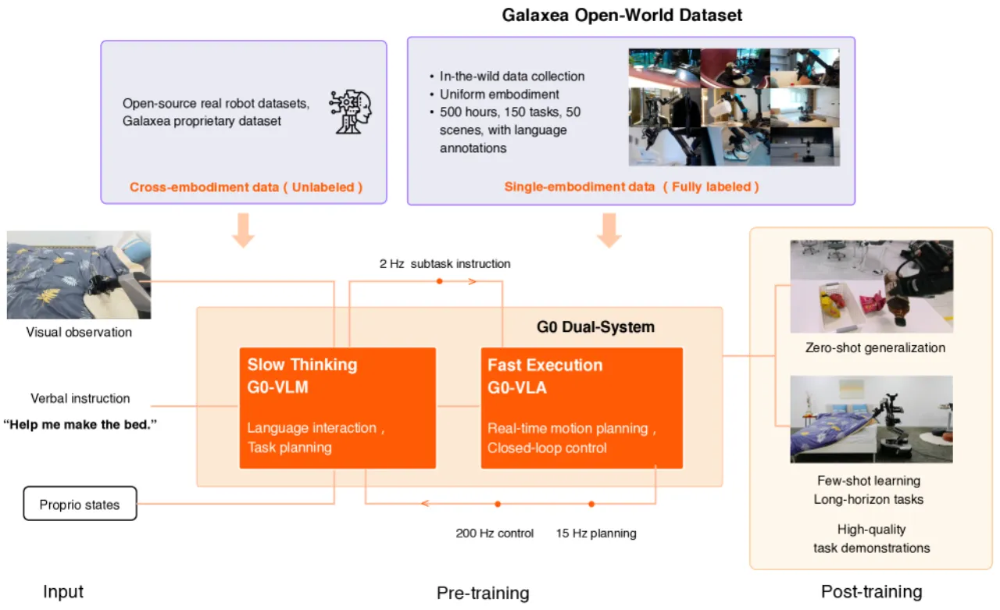
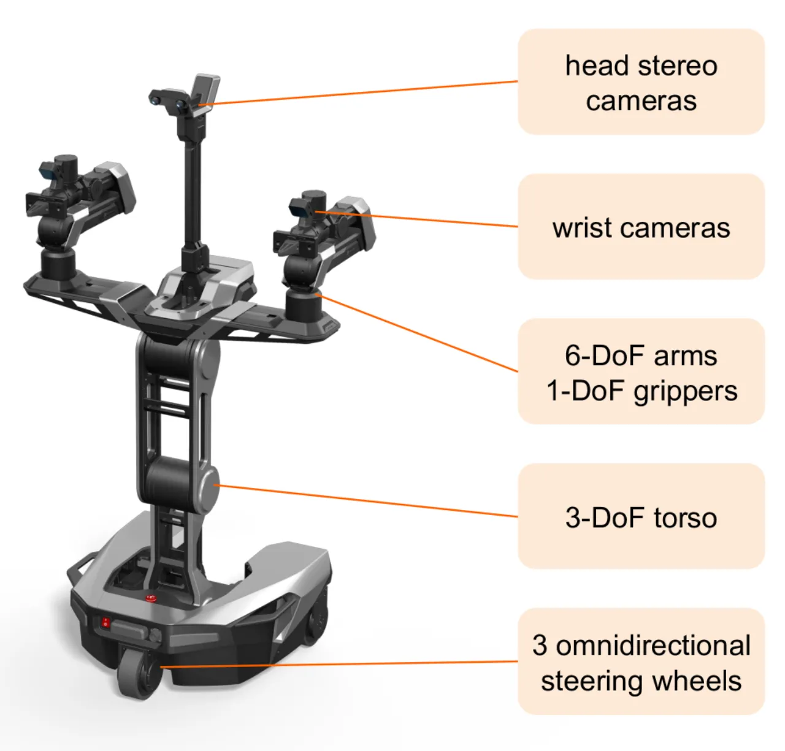
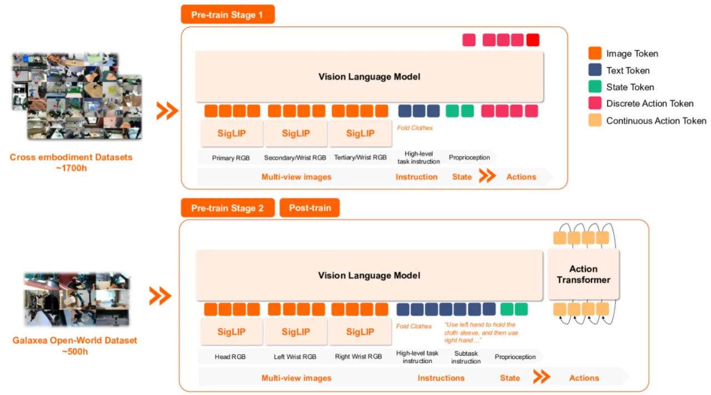
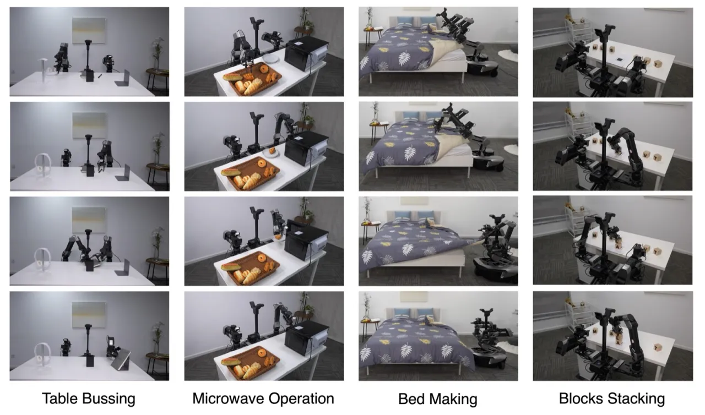
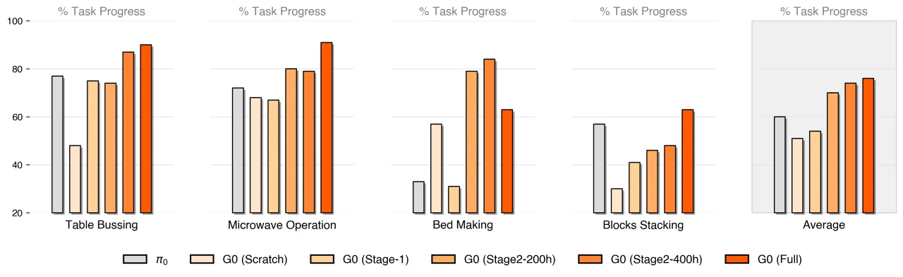

本文提出 Galaxea Open-World Dataset——一个在真实人居与工作环境中采集的大规模、高保真机器人行为数据集，并在此基础上设计了 G0 双系统框架：以 Vision-Language Model (VLM) 负责慢思考规划，以 Vision-Language-Action (VLA) 模型负责快速精细执行。三阶段训练流程（跨具身预训练 → 单体具身预训练 → 任务后训练）显著提升了模型在真实场景中的操作能力与迁移效率。
VLA 模型的发展面临一个核心瓶颈：缺乏大规模、高质量的开放世界机器人数据。现有数据集（如 BridgeData V2、DROID、Open X-Embodiment）大多在受控或人工布置的实验室场景中采集，场景多样性有限、语言标注粗糙，难以支撑 VLA 向真实世界的泛化。
"a substantial bottleneck persists due to the scarcity of large-scale, high-quality, open-world robot data."

现有多具身数据集（如 OXE）虽然规模庞大，但来自不同机器人平台，动作空间不统一，反而可能因"具身鸿沟（embodiment gap）"损害特定机器人的学习效果。本文以单一机器人平台（Galaxea R1 Lite）在 11 个真实地点的 50 个场景采集数据，涵盖居民区、餐饮、零售和办公等多种环境，并提供细粒度子任务级别的语言标注，从根本上解决数据多样性与一致性的矛盾。

G0 由两个异步运行的系统组成：G0-VLM（System 2，慢系统）负责高层规划，将自然语言指令分解为子任务序列；G0-VLA（System 1，快系统）以 flow matching 方式生成 action chunk，实现精细执行。整个框架采用三阶段渐进式训练。

G0-VLA 以预训练 VLM（基于 PaLiGemma，含 SigLIP 视觉编码器 + 单层 MLP 投影 + Transformer）为骨干，新增 Action Transformer（flow matching action expert）作为动作生成头。给定语言指令、视觉观测与本体感知状态，生成 action chunk At = at:t+k（水平为 k）。
G0-VLM 基于开源 Qwen2.5-VL 进行指令微调，融合 Galaxea 数据中的人工标注子任务与合成高层指令。训练时对关键帧（子任务终止或夹爪状态变化）赋予更高采样权重，并引入 1 秒间隔的 k 帧历史图像与机器人动作作为上下文。使用 DeepSeek-R1 reasoning LLM 生成自然语言指令（任务名称、历史/当前/下一子任务），大幅提升指令多样性与语义覆盖。
实验设计围绕核心问题：预训练数据如何影响 VLA？ 评测指标为 "progress score"（每任务 10 次测试运行的平均分），基准任务涵盖桌面操作、少样本迁移与移动操作。

在每任务 100 条训练轨迹的微调设置下，对比以下配置：

少样本迁移实验（每任务仅 20 条轨迹，10 个 epoch）表明：含 Stage-2 的模型显著优于无 Stage-2 的模型，动作更流畅稳定；而"Stage-1 alone do not show a clear advantage over models trained from scratch"，说明跨具身动作预训练单独使用可能不足。Bed Making（全身协调任务）的 per-skill progress 分析进一步印证：Stage-2 单体预训练大幅改善底盘与躯干控制，而跨具身预训练（Stage-1、π₀）"yields weaker performance, in some cases worse than training from scratch"，说明具身鸿沟在全身动作控制上尤为突出。
| 模型 | Table Bussing | Microwave Operation | Make the Bed | Build Blocks |
|---|---|---|---|---|
| Gemini-2.5-pro | 32.0 | 15.8 | 54.2 | 55.0 |
| Qwen2.5-VL-72B | 26.3 | 16.8 | 48.1 | 21.7 |
| Qwen2.5-VL-32B | 21.3 | 14.8 | 54.2 | 21.0 |
| Qwen2.5-VL-7B | 26.3 | 17.2 | 46.9 | 24.7 |
| G0-VLM（本文） | 83.3 | 74.2 | 78.2 | 75.6 |
G0-VLM "surpasses baseline accuracy by over 50%"，验证了机器人应用需要精确对齐的动作原语，而非仅仅通用视觉-语言理解能力。
整个数据集以 Galaxea R1 Lite 单一机器人平台采集，以确保动作空间一致性。这是 Stage-2 单体预训练有效的关键前提，但也意味着模型在其他具身形态（不同 DoF、不同传感器配置）上的直接泛化受限——新平台需重新采集数据并经历相应的训练阶段。（inferred）
实验显示，对于具身鸿沟较大的任务（如全身协调的 Bed Making），Stage-1 的跨具身预训练"in some cases worse than training from scratch"，说明动作空间不对齐时，大规模跨具身数据可能带来负迁移。如何在跨具身广度与单体一致性之间取得平衡，仍是开放问题。（inferred）
当前基准任务（Table Bussing、Microwave Operation、Bed Making、Blocks Stacking）设计合理但数量有限，每任务最多 100 条训练轨迹。论文中对移动操作（mobile manipulation）等更复杂场景的定量评测较少，泛化能力在更广泛的长尾任务上尚待验证。（inferred）
G0-VLM（慢系统）与 G0-VLA（快系统）异步运行；慢系统的规划延迟可能在高动态任务中影响实时性。论文未详细报告两系统间通信延迟对任务成功率的影响。（inferred）